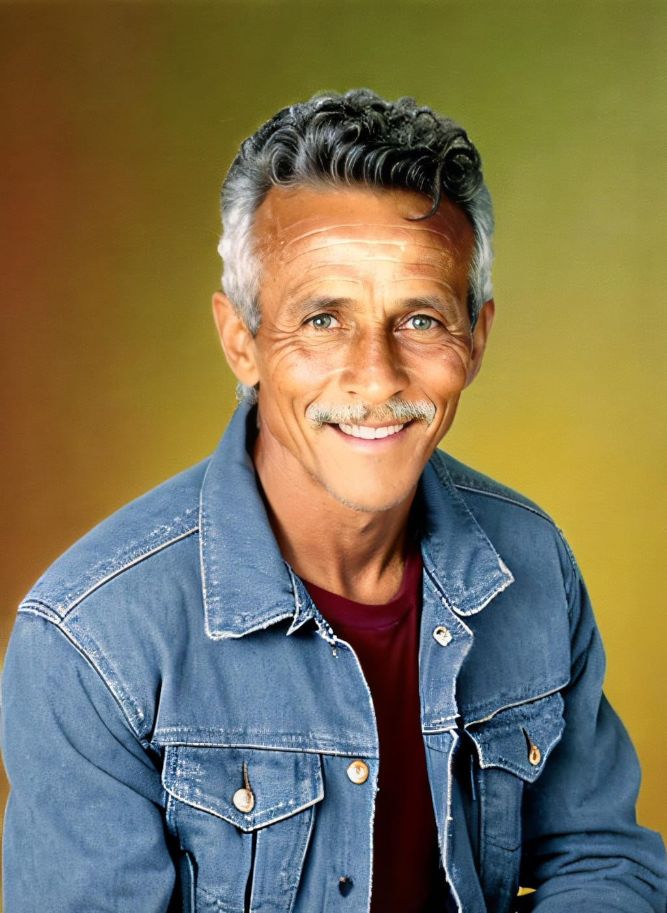

Fiquei impressionado com a qualidade e sabor das pizzas da Pizzaria Urbana! Recomendo a todos.
Lavignia Meirelles
Simplesmente as melhores pizzas da região! Ingredientes frescos e atendimento excepcional.
Daniel Oliveira
Variedade incrível de sabores, ambiente agradável e pizzas de dar água na boca. Uma experiência gastronômica única!
Dominique Leclerc

Atendimento rápido, entrega no prazo e pizzas incríveis. Sem dúvida, voltarei a pedir!
j. Mourão Gerdal

Fiquei impressionado com a qualidade e sabor das pizzas da Pizzaria Urbana! Recomendo a todos.
Eléonor França
Pizzaria Urbana